¿Qué es el modding?
El modding consiste en modificar diferentes elementos de un videojuego para cambiar su apariencia o comportamiento.
En Beast Smash puedes modificar las texturas utilizando las herramientas disponibles en esta página.

En las siguientes páginas aprenderás a crear y utilizar tus propios mods.
Que necesito para hacer mods?
Hay varias herramientas utiles, pero para Beast Smash es mas recomendable usar BS Tool y Ware debido a que estan dedicadas directamente a Beast Smash: Meme Fight.
Pero para poder ejecutar esas herramientas en pc necesitas tener instalado java, con exactitud Java 25(JRE o JDK) aca el links para descargar JRE/JDK 25
Distribuidor de JDK/JREy para hacerlo como lo haremos aca podrias instalar la textura de chillbara RTX no es necesario pero si quieres obtener el mismo resultado pues esta la opcion.
Descargar Imagen¿Cómo reemplazar texturas?
Para comenzar a crear un mod, el procedimiento más sencillo es reemplazar una textura.
Primero usaremos la herramienta BS Tool; tras ejecutarla, haz clic en "Abrir assets de BS". Después de eso se abrirá otra ventana con los assets de Beast Smash; lamentablemente, es difícil encontrar una textura por el mero nombre, así que aprovechando que estan en orden alfabetico acá van tips importantes:
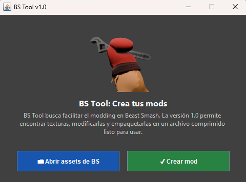
1- La mayoria de texturas tienen "Basecolor" y su resolucion es de 1024x1024.
2- El avatar o carta lleva comunmente el nombre en seco del personaje y con resolucion de 512x512.
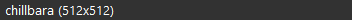
Si vas a reemplazar la textura de un personaje, procura siempre que cambies también el avatar pero en este caso solo modificaremos la textura. Una vez selecciones el asset que quieres cambiar, dale al botón "Modificar"; tras eso, se te abrirá otra ventana con tus archivos.
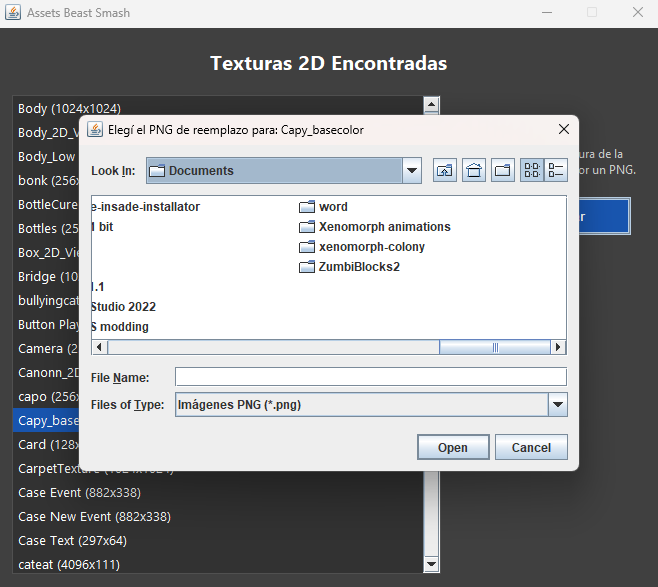
Busca en tus archivos y encuentra la imagen con la cual deseas reemplazar el "Texture2D", y haz doble clic o dale al boton de "Open" de esa manera la ventana se cerrara y habras ejecutado el cambio.
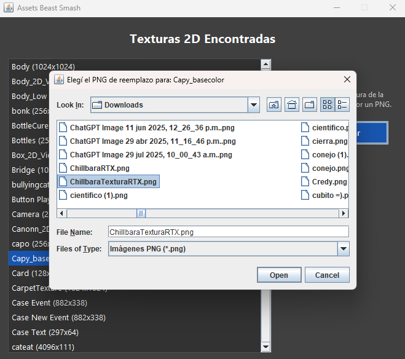
para saber si se modifico podras ver un "*" que indica el cambio con exito.
Una vez hayas hecho todo eso ahora sigue simplemente cerrar la ventana de los assets, tranquilo los cambios se guardan en el momento que ves ese "[*]". Ahora dale al boton de "Crear Mods", se creara tu mod automaticamente en la carpeta de "Descargas".
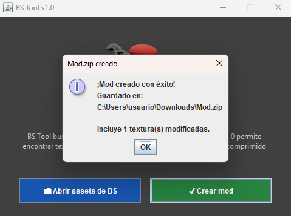
Si todo salio bien, acabas de crear tu primer mod para Beast Smash.
Usar Ware en PC
Ware permite cargar varios mods sin tener que modificar manualmente el juego cada vez.
Creaste un mod?
si creaste un mod y no tienes emulador, usar Ware no es necesario siempre y cuando confies en que tu mod salio bien, puedes tranquilamente distribuir sin testear.
Una vez instales Ware, debes descomprimir el archivo comprimido, una vez con la carpeta del ModLoader tendras que usar WinRAR y entrar al "bs.apk".
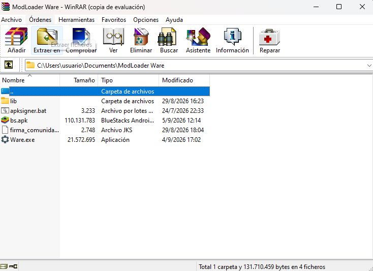
Despues veras los siguientes archivos, no les hagas caso y accede a la carpeta de "assets".
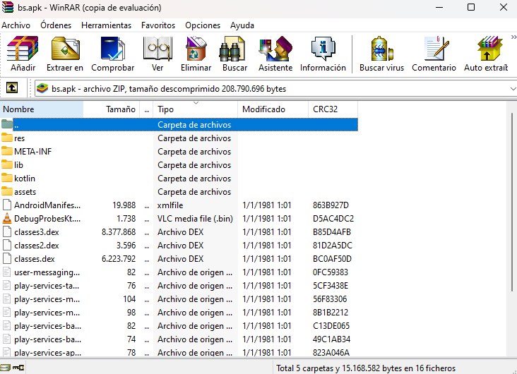
Tras estar en Assets, entra a "bin".
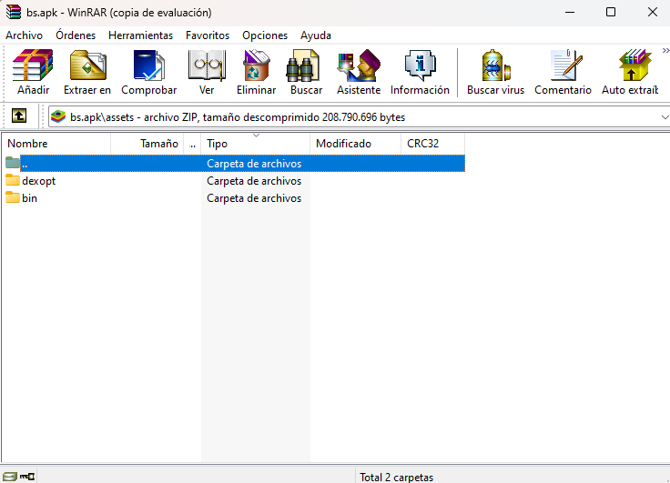
y finalmente veras una carpeta que diga "data" ingresa... Y allí estara la mina de oro pues encontraras la carpeta "mods".
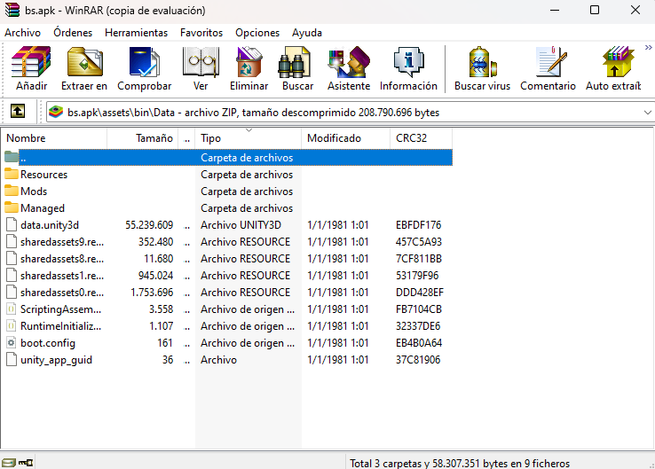
ingresa a "Mods" y veras un documento de texto, ahi es donde debes meter tus mods, en este caso solo metere un mod... el que acabamos de hacer en BS Tool.
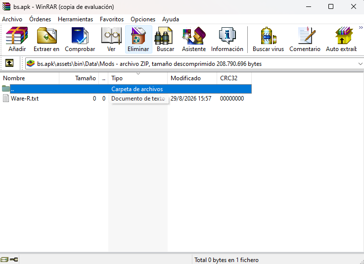
ahora tras meter el mod, vuelve a la carpeta del ModLoader.
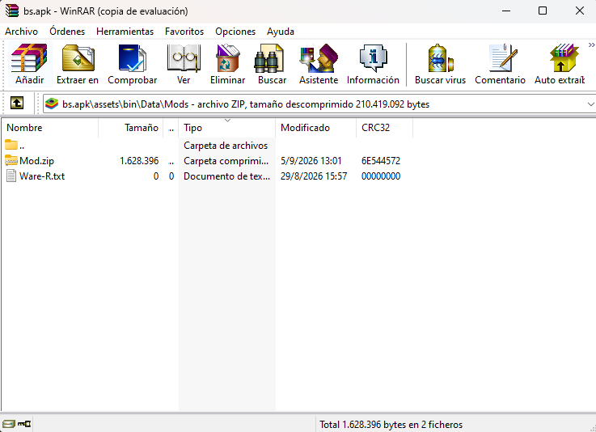
ahora ejecuta Ware.exe, si te sale un aviso ignoralo... Es un programa confiable, Ware abrira el cmd y creara un apk modificada con los mods que hayas metido.
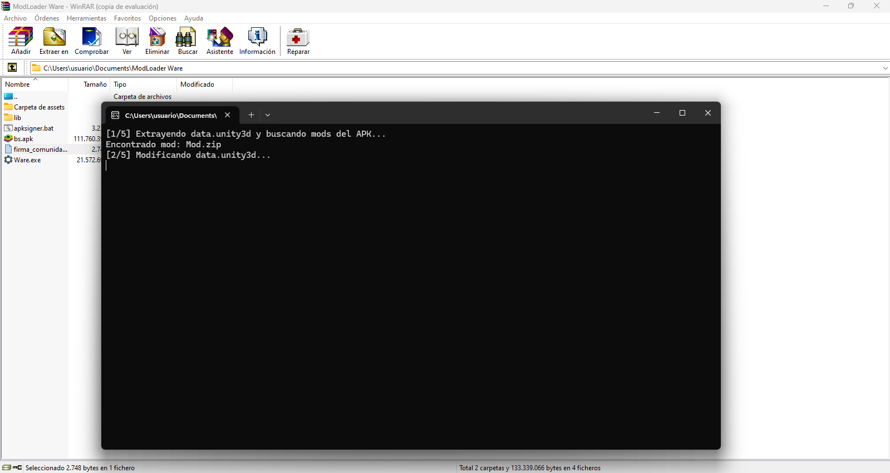
Si te sale este mensaje... Felicidades, ya tienes tu Beast Smash Moddeado.
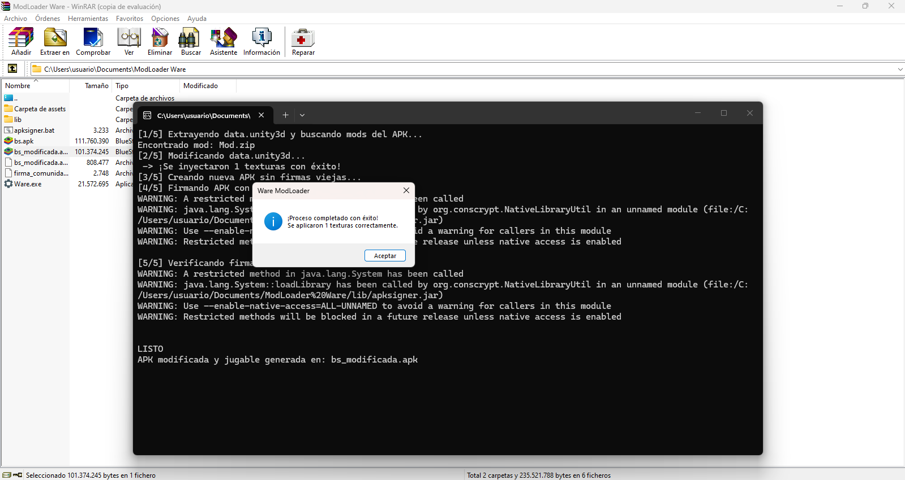
Solo usa un emulador e instala esa apk. AHORA TIENES TU/S MOD/S FUNCIONANDO :D
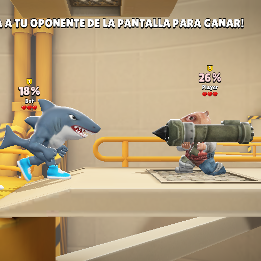
Usar Ware en Android
METODO 1
primero debes instalar una aplicacion de compresión y descompresión de datos, basicamente WinRAR pero para telefonos. Yo recomiendo ZArchiver ya que sirve perfecto y ademas es el mas popular de la play store, tambien necesitas Termux pero eso lo detallare mas adelante.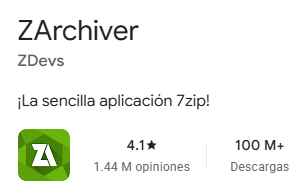
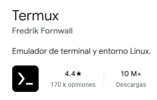
Ahora tienes que hacer hacer en ZArchiver exactamente lo mismo que hiciste en pc con WinRAR, descargar "ModLoader Ware - Android edition", extraerlo, y entrar a la carpeta, haz un clic en el .apk y veras los siguientes botones.
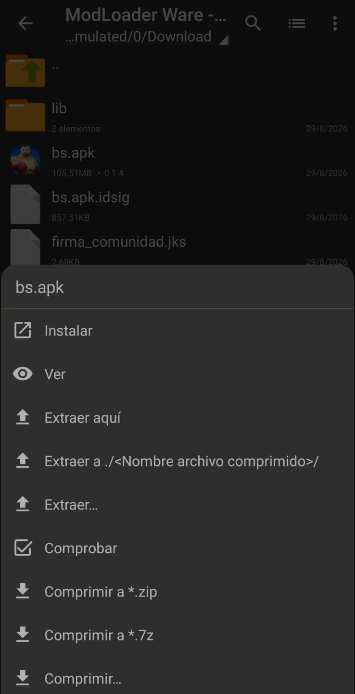
presiona el boton de "Ver" y repite la misma ruta de carpetas que en pc: Assets > bin > data > Mods. Veras solo un archivo de texto, alli introduce tu mod y vuelve al principio
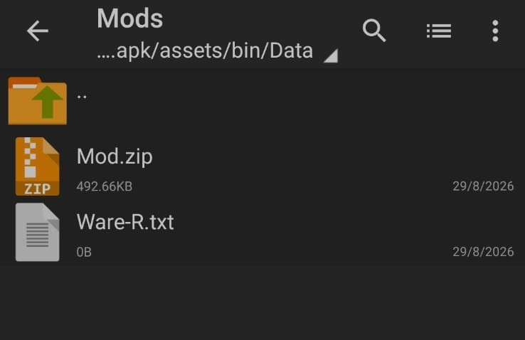
ahora ya puedes cerrar ZArchiver ya que tendras que usar Termux, aca necesito que prestes mucha atencion a los pasos y comandos.
Al entrar en Termux si nunca has visto una terminal puede que te sientas confundido.
No te preocupes solo tienes que copiar y pegar los siguientes comandos para descargar las dependencias del codigo en Android.
Primero ejecuta el siguiente comando "termux-setup-storage", te llevara a configuraciones del movil, debes darle a termux el permiso para aditar, ejecutar, y ver tus archivos, ya que de lo contrario no funcionara.
ESTO ES UN PASO IMPORTANTE
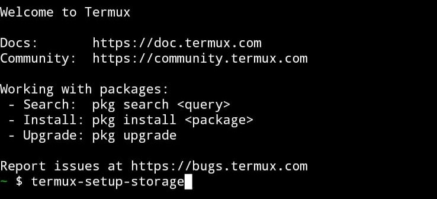
Ahora viene lo mas tardado, descargar las dependencias, solo ejecuta los comandos en este orden:
Aca te pedira una confirmacion para continuar, escribe "y" para que todo siga.
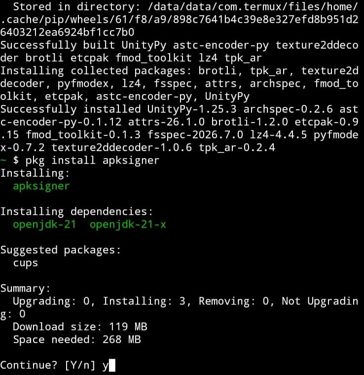
Si todo salio bien, acabas de descargar y configurar todo lo necesario para Termux, NO ES NECESARIO repetir el proceso. Con una vez hecho es mas que suficiente
Ahora tienes que acceder a tu carpeta, naturalmente si no lo has movido deberia estar en "Download", si la moviste vuelve a ponerla alli.
ahora en el siguiente orden pon los comandos
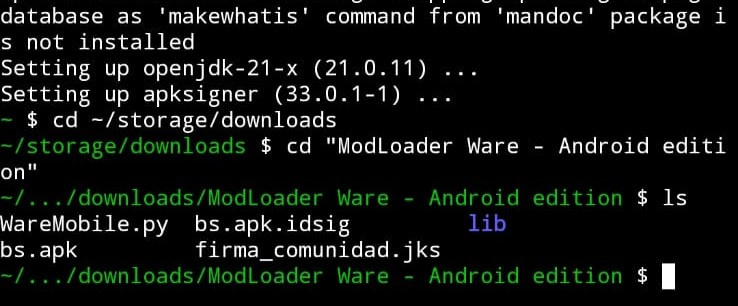
Si hiciste todo bien deberian salir los archivos de la imagen
Si solo aparece "lib" no le has dado el permiso inicial a Termux
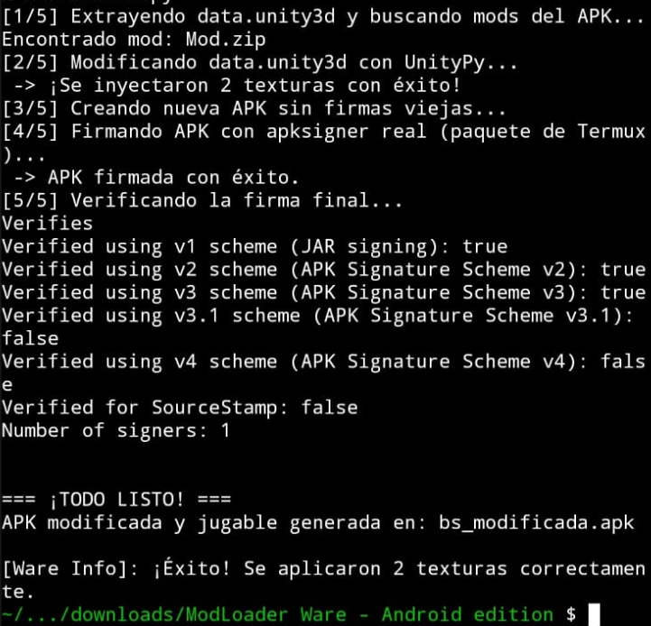
FELICIDADES: Ya tienes tu Beast Smash Moddeado
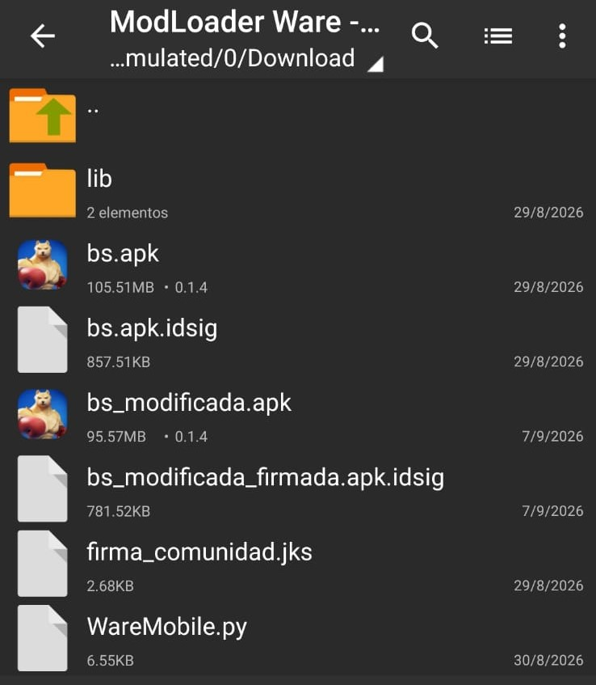
METODO 2
Sin Termux
La otra opcion es la mas rapida, instalas directamente el .apk modificada creada por el autor del mod como se ha hecho desde el principio, el unico problema es que claro: No puedes combinar mods y dependes de que el creador deje el mod en formato apk modificada.
Que hago si ya configure todo en termux?
Al ser solo una vez la configuracion, la siguiente vez solamente pon los comandos:
Y ya tendrias tu Beast Smash moddeado de nuevo.